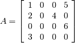
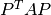
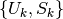
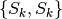
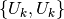
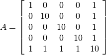

C Interface¶
The CHOMPACK routines are available as a standard C library.
Creating chordal matrices¶
The two most basic data-structures in CHOMPACK are a cliqueforest, which represents the sparsity pattern of symmetric matrix, and a chordalmatrix which attaches numerical values to a sparsity pattern defined by a cliqueforest.
A clique-forest is created using the cliqueforest_create function.
- int cliqueforest_create(cliqueforest **F, const ccs *X, const int_t *p)¶
Creates a cliqueforest from a ccs matrix.
Parameters: - F – is overwritten with a pointer to the created cliqueforest object.
- X – ccs matrix. X must be chordal (e.g., created by chordalembedding).
- p – permutation associated with X of order n, if n is the order of X. Typically, p is a fill-in reducing permutation used for creating X with chordalembedding.
Returns: a status integer CHOMPACK_OK, or CHOMPACK_NOMEMORY.
A clique-forest is destroyed using the function:
- void cliqueforest_destroy(cliqueforest *F)¶
We can create a chordalmatrix for a particular cliqueforest using the routine:
- chordalmatrix * ccs_to_chordalmatrix(const cliqueforest *F, const ccs *X)¶
Creates a chordal matrix by projecting a sparse matrix X onto the sparsity pattern defined by the clique-forest F. Elements in X outside the chordal sparsity pattern in F are ignored.
Parameters: - F – a cliqueforest object specifying a chordal sparsity pattern.
- X – a sparse ccs matrix with the numerical values.
Returns: a chordal matrix object, or NULL if a memory error occured.
and a chordalmatrix object is destroyed using the routine:
- void chordalmatrix_destroy(chordalmatrix *X);
Internally, CHOMPACK does not distinguish between chordal matrices and factors; the user of the library must make that distinction. In the following we will refer to a symmetric chordalmatrix object as a chordal matrix and a factor stored in a chordalmatrix as a chordal factor.
A chordal matrix is converted to ccs format using the routine:
- ccs * chordalmatrix_to_ccs(const chordalmatrix *A)¶
and a chordal factor is converted using the routine:
- ccs * chordalfactor_to_ccs(const chordalmatrix *A)¶
Finally, a copy of a chordalmatrix is created using the routine:
- chordalmatrix * chordalmatrix_copy(const chordalmatrix *A)¶
Computational routines¶
The CHOMPACK library provides the following computational routines.
- int cholesky(chordalmatrix *X)¶
Computes a zero fill-in Cholesky factorization
(1)

of a positive definite chordal matrix X.
Parameters: - X – a chordal matrix. On entry, X contains a positive definite chordal matrix, and on exit it is overwritten with its Cholesky factor.
Returns: CHOMPACK_OK if the factorization was successful, CHOMPACK_FACTORIZATION_ERR if the factorization failed, or CHOMPACK_NOMEMORY.
- int solve(const chordalmatrix *L, double *X, int m, int sys)¶
Solves a factored set of equations, or multiplies with Cholesky factors.
L contains the factors of a factorization (1) of a positive definite sparse chordal matrix. X is a dense matrix of doubles with the same number of rows as L, stored as a contigious array on column-major-order. On exit, X is overwritten with one of the four matrices in the table.
action sys 
0 
1 
2 
3 Parameters: - L – chordal factor
- X – dense matrix of doubles stored in columm-major-order with n rows, if n is the order of L
- m – number of columns of X
- sys – integer
- chordalmatrix * completion(const chordalmatrix *X, int *info)¶
Returns the Cholesky factor of the inverse of the maximum-determinant positive definite completion of a symmetric chordal matrix X, ie, the Cholesky factor of the inverse of the solution of

The inverse
 has the same sparsity pattern as
has the same sparsity pattern as
 and satisfies the nonlinear equation
and satisfies the nonlinear equation
completion returns the factor in the factorization
 .
.Parameters: - X – chordal matrix
- info – status integer overwritten with CHOMPACK_OK, CHOMPACK_FACTORIZATION_ERR or CHOMPACK_NOMEMORY
Returns: chordal factor with the same sparsity pattern as X
- int partial_inv(chordalmatrix *L)¶
Evaluates the projection of the inverse of the matrix
 on the sparsity pattern of .
on the sparsity pattern of .Overwrites L with lower-triangular part of

where
is a positive definite chordal matrix specified by
its Cholesky factor  .
.Parameters: - L – chordal factor
Returns: CHOMPACK_OK, CHOMPACK_FACTORIZATION_ERR or CHOMPACK_NOMEMORY
- int hessian_factor(const chordalmatrix *L, const chordalmatrix *Y, chordalmatrix **U, int adj, int inv, int m)¶
The mapping

is the Hessian of the log-det barrier at a positive definite chordal matrix
, applied to a symmetric chordal matrix  .
The Hessian operator can be factored as
.
The Hessian operator can be factored as
where the mappings on the right hand side are adjoint mappings that map chordal symmetric matrices to chordal symmetric matrices.
The hessian_factor function evaluates these mappings or their inverses for a list of symmetric chordal matrices **U, and overwrites the matrices with the results. The following table lists the possible actions.
Action adj inv 
0 0 
0 1 
1 0 
1 1 The input argument L is the Cholesky factor of
,
as computed by the cholesky function.
The input argument Y is the partial inverse of the inverse of
, as computed by the partial_inv function.
The input argument U is a list of CHOMPACK matrices with the
same sparsity pattern as L and Y.The matrices
 can be computed by two calls
can be computed by two callshessian_factor(L, Y, U, 0, 0); hessian_factor(L, Y, U, 1, 0);
The matrices
 can be computed as
can be computed ashessian_factor(L, Y, U, 1, 1); hessian_factor(L, Y, U, 0, 1);
Parameters: - L – chordal factor
- Y – chordal matrix with the same sparsity pattern as L.
- U – list of CHOMPACK matrices with the same sparsity pattern as L and Y
- adj – 0/1
- inv – 0/1
Auxiliary routines¶
- void scal(double a, chordalmatrix *X)¶
Evaluates

Parameters: - alpha – scaling factor
- X – chordal matrix
- void axpy(const chordalmatrix *X, chordalmatrix *Y, double a)¶
Evaluates

Parameters: - X – chordal matrix
- Y – chordal matrix with the same sparsity pattern as X
- alpha – float
- int llt(chordalmatrix *L)¶
On entry L contains a Cholesky factor of
 .
On exit, L is overwritten with X.
.
On exit, L is overwritten with X.Returns: CHOMPACK_OK or CHOMPACK_NOMEMORY
- double dot(const chordalmatrix *X, const chordalmatrix *Y)¶
Returns the inner product

of two symmetric sparse matrices with the same chordal sparsity pattern.
Parameters: - X – chordal matrix
- Y – chordal matrix with have the same sparsity pattern as X
- double logdet(const chordalmatrix *L)¶
Returns the logarithm of the determinant of a Cholesky factor L.
Parameters: - L – chordal factor
Routines for sparse CCS matrices¶
Sparse matrices are specified in compressed-column-storage using the (ccs) data-structure. For a general nrows by ncols sparse matrix with nnz nonzero entries this means the following. The sparsity pattern and the nonzero values are stored in three fields:
- values
- A double array with the nonzero entries of the matrix stored columnwise.
- rowind
- An array of integers of length nnz containing the row indices of the nonzero entries sorted in increasing order, stored in the same order as values.
- colptr
- An array of integers of length ncols + 1 with for each column of the matrix the index of the first element in values from that column. More precisely, colptr[0] is 0, and for k = 0, 1, ..., ncols - 1, colptr[k+1] is equal to colptr[k] plus the number of nonzeros in column k of the matrix. Thus, colptr[ncols] is equal to nnz, the number of nonzero entries.
For example, for the matrix

the elements of values, rowind, and colptr are:
- values:
- 1.0, 2.0, 3.0, 4.0, 5.0, 6.0
- rowind:
- 0, 1,3, 1, 0, 2
- colptr:
- 0, 3, 3, 4, 6.
A ccs data-structure can be allocated using the routine:
- ccs * alloc_ccs(int_t nrows, int_t ncols, int nnz)¶
Allocates a nrows times ncols ccs matrix with nnz non-zero elements.
and a ccs structure can be freed with the routine:
A given ccs can be embedded into a chordal sparsity pattern (i.e., it can be triangulated) using the routine:
- ccs * chordalembedding(const ccs *X, int *nfill)¶
Parameters: - X – a ccs matrix to be triangulated.
- nfill – an integer that will be overwritten with the amount of fill-in (i.e., the number of edges added in the triangulation process).
Returns: a chordal embedding of X as a ccs matrix.
Additionally, a number of auxilliary routines for ccs matrices are available.
- ccs * perm(ccs *A, int_t *p)¶
Returns a symmetric permutation  where P is a permutation and A is a square matrix of dimension n.
Parameters: - A – ccs matrix.
- p – a valid permutation of order n, if n is the dimension of A.
Returns: a symmetric permutation of the rows and columns of A.
Overview of data-structures¶
- ccs¶
typedef struct { void *values; /* value list */ int_t *colptr; /* column pointer list */ int_t *rowind; /* row index list */ int_t nrows, ncols; /* number of rows and columns */ int id; /* not currently used */ } ccs;
- nrows¶
number of rows
- ncols¶
number of columns
- values¶
length colptr[ncols] double array with numerical values.
- colptr¶
length ncols+1 array with compressed column-indices.
- rowind¶
length colptr[ncols] array with row-indices.
- id¶
included for compatibility with CVXOPT; not currently used.
- cliqueforest¶
typedef struct cliqueforest { int nRoots, nCliques, n; struct clique **roots, **list, *location; int_t *p, *ip; } cliqueforest;
- nRoots¶
number of clique-trees in the clique-forest
- nCliques¶
number of cliques in the clique-forest
- n¶
number of nodes (dimension of the matrix)
- roots¶
array of pointers to each root element
- list¶
array of pointers to each clique numbers in reverse topological order
- p¶
permutation used for creating the clique-forst
- ip¶
inverse permutation
- location¶
used internally by CHOMPACK
- chordalmatrix¶
typedef struct { cliqueforest *F; double **US; double **SS; double **UU; void *F_py; } chordalmatrix;
- F¶
clique-forest representing sparsity pattern of matrix
- US¶
array of matrices corresponding the  blocks of the chordal matrix
- SS¶
array of matrices corresponding the  blocks of the chordal matrix
- UU¶
array of matrices corresponding the  blocks of the chordal matrix
- F_py¶
included for compatibility with CVXOPT
Examples¶
The following example computes the partial inverse of the chordal matrix

#include <stdio.h>
#include "chompack.h"
int main() {
int j, k;
double Aval[] = {10.0, 1.0, 10.0, 1.0, 10.0, 1.0, 10.0, 1.0, 10.0};
int_t Acol[] = {0, 2, 4, 6, 8, 9};
int_t Arow[] = {0, 4, 1, 4, 2, 4, 3, 4, 5};
ccs A = { .values = Aval, .colptr = Acol, .rowind = Arow, .nrows = 5, .ncols = 5, 0 };
printf("creating cliquetree\n");
cliqueforest *F;
cliqueforest_create(&F, &A, NULL);
printf("creating chordal matrix\n");
chordalmatrix *X = ccs_to_chordalmatrix (F, &A);
printf("performing factorization\n");
cholesky(X);
printf("computing partial inverse\n");
partial_inv(X);
ccs *Y = chordalmatrix_to_ccs(X);
printf("partial inverse:\n");
for (j=0; j<Y->ncols; j++)
for (k=Y->colptr[j]; k<Y->colptr[j+1]; k++)
printf("(%i,%i): % 3.2e\n", (int)Y->rowind[k], j, ((double *)Y->values)[k]);
chordalmatrix_destroy(X);
cliqueforest_destroy(F);
free_ccs(Y);
return 0;
}